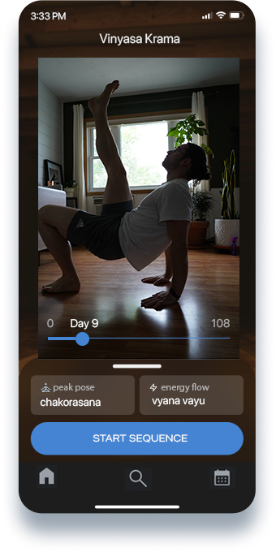

Discover the Benefits of Yoga
Your personalized 108-day progression that guides you to master yoga poses and sequences, thoughtfully designed to uphold ahimsa (non-harming) and instill a sense of dharma (purpose) in your practice.
Features
- Personalized 108-Day Plans: Vinyasa Krama designs a unique, day-by-day progression tailored to your goals and current ability, taking you on a 108-day journey to yoga mastery.
- Focus on Ahimsa and Dharma: In keeping with core yogic principles, progressions are designed to minimize harm and align with your personal sense of purpose. This gives your practice a deeper, more authentic feel.
- Ease of Use: Vinyasa Krama's user-friendly interface makes it simple to start and follow your yoga journey, whether you're a beginner or an experienced yogi.
- Pose Breakdowns: Complex poses are made accessible with step-by-step breakdowns and instructions, helping you understand and achieve them safely and effectively.
- Printable Yoga Classes: Print your personalized sequences for offline use, perfect for teachers planning classes or individuals wanting a screen-free practice.
- AI-Assisted Yoga Sequences: Create safe, completely unique, AI-assisted yoga sequences, custom-built around your desired 'peak poses' for the 108 day progression path.
Get Started Today
Download Vinyasa Krama now and embark on your yoga journey.
Download Now